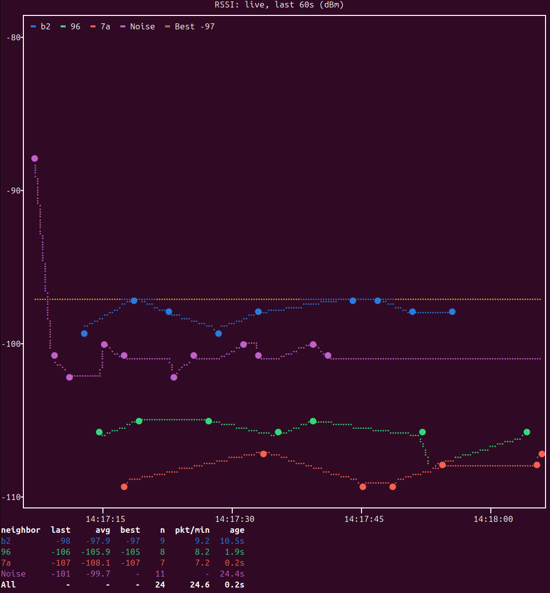
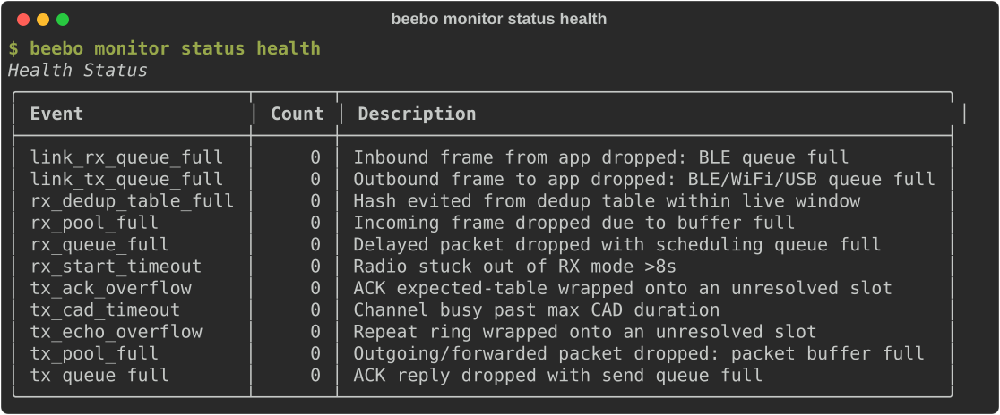
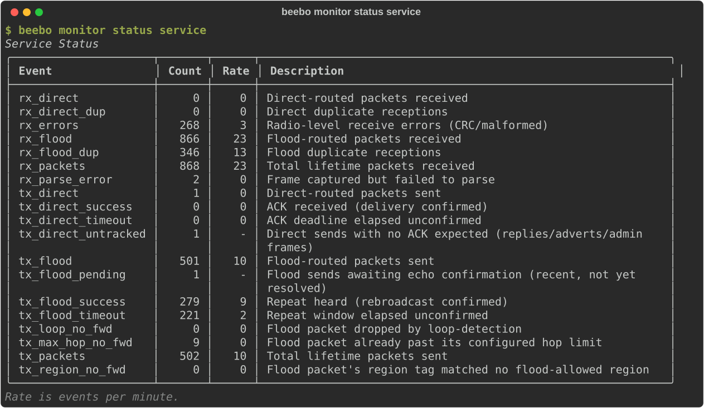
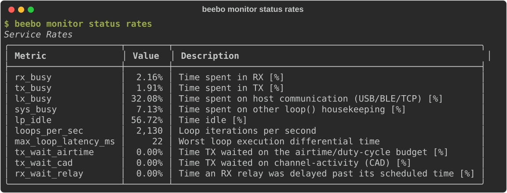

Monitoring¶
beebo monitor reads MonRing, a continuous ring buffer in free PSRAM (see Diagnostics and Protocol Additions) that the firmware appends to on its own — nothing needs to be running or connected on the host for capture to happen. beebo monitor just controls it and reads it back: start/stop, clear, capture (per-kind on/off), pull (incremental raw download into a local per-device dataset), list (per-file/per-kind record counts for what's been pulled), decode (view/filter the pulled dataset, or --save it as CSV/JSON for beebo analyze).
Using the monitor¶
$ beebo monitor # ring fill, capture state, window and packet totals
$ beebo monitor pull # download the new records into the local dataset
$ beebo monitor list # what has been pulled, per file and kind
$ beebo monitor decode -k rx --limit 20 # view and filter the pulled records
$ beebo monitor decode --save # write CSV/JSON for `beebo analyze`
$ beebo monitor capture rx off # switch one record kind off
Live charts¶
beebo monitor plot draws what the node hears as it happens, in the terminal. monitor plot rssi charts each received packet's RSSI per neighbor, with the noise floor and a level line at the best RSSI since the start, and a table of the last, average and best RSSI, the packet count and the rate of each neighbor. It is meant for placing an antenna: move the antenna and watch the levels follow.

monitor plot tuning indicators and monitor plot tuning trial chart the tuning indicators and a running setting trial the same way. Every option is in the CLI reference.
Reading monitor status¶
beebo monitor status answers "how is the node doing right now?" without downloading the ring. It prints three tables, and monitor status health, service or rates prints one of them. On the node console the same sections come as name=value lines of the counters that are not zero. The counters count from boot; nothing is saved across a reboot.
Health: the node's own faults¶
Health Status counts the node's internal faults and drops, the inputs of the SoH score in Health Check. A healthy node reads zero on every row. A row that grows says what ran out.

| Counter | What it counts |
|---|---|
rx_pool_full |
Incoming frame dropped due to buffer full |
rx_queue_full |
Delayed packet dropped with scheduling queue full |
tx_queue_full |
ACK reply dropped with send queue full |
link_tx_queue_full |
Outbound frame to app dropped: BLE/WiFi/USB queue full |
link_rx_queue_full |
Inbound frame from app dropped: BLE queue full |
tx_pool_full |
Outgoing/forwarded packet dropped: packet buffer full |
tx_cad_timeout |
Channel busy past max CAD duration |
rx_start_timeout |
Radio stuck out of RX mode >8s |
tx_ack_overflow |
ACK expected-table wrapped onto an unresolved slot |
tx_echo_overflow |
Repeat ring wrapped onto an unresolved slot |
rx_dedup_table_full |
Hash evicted from the dedup table within the live window. Shown here but not part of SoH |
Each name is also an event type of the Event Catalog, where the occurrences carry timestamps.
Service: traffic and delivery¶
Service Status is what the node handled and how its sends fared. The host adds a Rate column, events per minute over a moving 60 s window; see Counter rates.

| Counter | What it counts |
|---|---|
rx_packets |
Total lifetime packets received |
rx_flood, rx_direct |
Flood-routed and direct-routed packets received |
rx_flood_dup, rx_direct_dup |
Duplicate receptions of each |
rx_errors |
Radio-level receive errors (CRC/malformed) |
rx_parse_error |
Frame captured but failed to parse. Counted in QoS, not in SoH |
tx_packets |
Total lifetime packets sent |
tx_flood, tx_direct |
Flood-routed and direct-routed packets sent |
tx_direct_success, tx_direct_timeout |
A direct send's ACK arrived, or its deadline elapsed unconfirmed |
tx_flood_success, tx_flood_timeout |
A flood send's repeat was heard, or its window elapsed unconfirmed |
tx_direct_untracked |
Direct sends with no ACK expected (replies, adverts, admin frames) |
tx_flood_pending |
Flood sends awaiting echo confirmation (recent, not yet resolved) |
tx_max_hop_no_fwd |
Repeater: flood packet already past its configured hop limit |
tx_region_no_fwd |
Repeater: flood packet's region tag matched no flood-allowed region |
tx_loop_no_fwd |
Repeater: flood packet dropped by loop detection |
The success and timeout rows are what QoS is computed from. The three *_no_fwd rows are configured policy, not faults, so they are not in SoH.
Rates: where the time goes¶
Service Rates is the node's own time over the latest 10 s window, in percent of the window except where noted. The metrics are explained in Time, Headroom and Routing-Latency Metrics.

| Metric | Meaning |
|---|---|
rx_busy, tx_busy |
Time spent in RX and in TX |
lx_busy |
Time spent on host communication (USB/BLE/TCP) |
sys_busy |
Time spent on other main-loop housekeeping |
lp_idle |
Time idle |
loops_per_sec |
Loop iterations per second (a count) |
max_loop_latency_ms |
Worst single loop stall in the window (milliseconds) |
tx_wait_airtime |
Time TX waited on the airtime/duty-cycle budget |
tx_wait_cad |
Time TX waited on channel-activity detection |
rx_wait_relay |
Time an RX relay was delayed past its scheduled time |
A firmware built without CPU accounting prints no Rates table.
Automating periodic pulls¶
A cron job or systemd timer that just runs beebo -t <device> monitor pull on an interval is enough to keep an offline dataset in sync — pull is incremental by default (only records newer than the local cursor are fetched), so a routine run only transfers what's new since the last one, not the whole ring. No separate daemon or state file to manage beyond what pull already keeps (monring.cursor.json, next to the pulled .bin files).
The only thing to size is the interval itself, against how fast the ring fills: beebo -t <device> monitor (no subcommand) prints the ring's current fill (e.g. 22,486 / 65,536 records) and its elapsed span, so records ÷ elapsed gives a rough fill rate — pick an interval comfortably shorter than (capacity − typical fill) ÷ rate, so the ring can't wrap (evicting records pull hasn't fetched yet) between two runs. beebo -t <device> monitor list shows the same per-day/per-kind breakdown for what's actually accumulated locally, handy for spot-checking that a scheduled pull is really keeping up.
Example crontab entry, pulling every 15 minutes:
*/15 * * * * /path/to/venv/bin/gatto monitor pull >> ~/.beebo/pull.log 2>&1
Or a systemd user timer (~/.config/systemd/user/beebo-pull@.service/.timer, one instance per device via systemctl --user enable --now beebo-pull@gatto.timer):
# beebo-pull@.service
[Service]
Type=oneshot
ExecStart=/path/to/venv/bin/beebo -t %i monitor pull
# beebo-pull@.timer
[Timer]
OnBootSec=5min
OnUnitActiveSec=15min
[Install]
WantedBy=timers.target
Record kinds¶
Each record is a fixed 16 bytes, one of fourteen kinds:
| Kind | What it captures | Cadence |
|---|---|---|
sync |
A time-base relatch (epoch anchor for every record after it, until the next one) | Automatic, on ring init/wrap or a clock jump |
rx |
One reception: SNR, RSSI, neighbor, packet type/route, and its disposition (see below) | Every RX (if monitor.rx is on) |
tx |
One of this node's own transmissions: route, type, destination, airtime, result (ok/timeout) | Every TX (if monitor.tx is on) |
radio |
The live radio config (freq/sf/bw/cr/tx_power/rxgain/fem.rxgain) | Only on a real change (dedup'd) |
env |
Noise floor, battery, MCU temp, free heap, packet-pool free count, TX queue depth, sticky fault flags, CAD-busy episode count | Only on a real change (dedup'd); monitor.env off by default (higher volume) |
batt |
One battery voltage sample, with idle/trend state and which transport radios are powered | Periodic (board.battery.sample_period) |
adaptive |
One adaptive-tuner decision (param, old/proposed value, reward) | Once per tuning tick, repeater role only, opt-in (monitor.tuning) — see The Adaptive Tuner |
eval |
One closed evaluation window or trial block (indicators, outcome, flags) | Once per window/block while a tuner or trial runs, opt-in (monitor.tuning) |
trial |
One setting-trial record: a start (setting, sides, schedule), one per block (running mean and bounds) or an end (outcome, statistics) | While a trial runs, opt-in (monitor.tuning) — see The setting trial |
setting |
One admin-visible setting change: which one, old/new value, and which dispatch path made it | Immediately, whenever a change happens |
command |
One command run that mutates state or is a deliberate one-shot action (OTA begin/end, reboot, a SET_*/set ...) — routine reads/polling are NOT logged, to keep this from flooding |
Immediately, whenever an eligible command runs |
event |
A discrete, timestamped occurrence with no other fixed shape (faults, overflows, queue drops, ...) — see the full catalog below | Immediately, at the moment each occurrence happens |
route |
Radio/link utilization and queue-wait snapshots | Periodic while capture is enabled |
debug |
Firmware diagnostic event: severity, source file/line, event type, detail, and five raw user bytes | When firmware emits a persisted high/medium debug event |
Enabling a setting trial turns tuning, event and radio capture on and rx and tx capture off for the run. monitor.path is not a record kind: it makes an RX record hold the last three hops of its path (one byte each) instead of the last hop's identity, off by default; analyze paths reads it. setting/command share event's capture toggle (monitor.event) — there's no separate leaf for them, since they're still conceptually part of "admin/event activity capture," just split into their own record kinds because every instance shares one fixed column shape (unlike the genuinely one-off events below).
setting/command were split out of the generic event kind precisely because they always carry the same fixed columns (setting/old_value/new_value/source and command/source respectively) — unlike faults, overflows, and queue drops, which are each their own one-off shape and stay under event.
monitor.event is an all-or-nothing switch for the whole event kind; beebo monitor events is a finer filter underneath it, one on/off bit per individual event TYPE (Event Catalog name, e.g. tx_ack_success) — useful since capture isn't free and a busy node can log a lot of high-volume verdict events. beebo monitor events alone lists every type's current state; beebo monitor events <name> on|off toggles one. Unlike monitor capture's persisted per-kind bits, this mask is RAM-only and resets to capture-everything on every reboot — a live tuning knob, not a standing device policy.
An rx record's disposition is three independent axes packed into one byte, so a single reception can carry several outcomes at once (e.g. accepted and forwarded) instead of one lossy "best" value:
- endpoint — the local/terminal verdict:
accepted,not_for_us,duplicated,wrong_hop,filtered,incomplete,forged_sig,self,unknown_type,parse_err,pool_full,misc_drop. - routing — what this node did as a relay:
forwarded,no_forward,path_full. - invalid — a rider bit meaning the frame's header/path didn't parse (malformed or truncated), so route, neighbor and hash are unknown (doesn't affect actual packet handling).
- queue_full — a rider bit meaning routing said
forwardedbut the actual send never happened (send_queuewas full when the firmware tried to enqueue it) — seetx_queue_fullbelow for why this is a bit on the record rather than a separate event.beebo analyze tuning indicatorsexcludesforwarded+queue_fullrecords from its routed count.
Per-kind capture defaults¶
beebo settings monitor.* (or beebo monitor capture) switches each record kind on or off independently. On a fresh device rx, tx, sync, radio, batt, event, setting and command capture by default. env and tuning are opt-in: env is comparatively high-volume, and tuning covers the adaptive, eval and trial records, so turn it on before running either tuner. This default only applies once, when a device's prefs file is first created. An already-provisioned device that has since been upgraded keeps the capture byte it already had, so a newly added kind (like event, added after some deployed devices' files existed) does not turn on for them. Check beebo settings monitor after upgrading and turn on anything you expect but don't see.
Time, Headroom and Routing-Latency Metrics¶
Besides the score, beebo tracks a second family of signals — how the node's own loop/CPU time is spent, and how much of a packet's delay is internal (this node computing) versus external (waiting on channel/budget backpressure). These are diagnostic only and not part of the on-device reward — see Using these signals for tuning below for exactly what's wired in and what isn't.
RX/TX/LX/SYS busy and system idle¶
rx_busy/tx_busy/lx_busy measure wall-clock time spent in
checkRecv()/checkSend()/host communication (USB/BLE/TCP), including any
blocking wait on hardware inside them (radio SPI, USB/BLE transfer) — not
CPU cycles the way an OS "CPU time" figure would be. sys_busy covers
everything else in the main loop that isn't rx/tx-dispatched or lx-timed —
battery ADC refresh, the slow-stat cache (storage usage, MCU temperature),
env sampling, OTA/echo timeout checks — some of it non-trivial (a
temperature read averages four ~76ms samples). lp_idle ("loop-idle") is
the remainder across every task at once (window - (rx_busy + tx_busy +
lx_busy + sys_busy)) — a system-wide figure, not a per-task one; there's
no such thing as "TX's own idle time" separate from this. Without
sys_busy, that housekeeping time was silently counted as idle, since the
main loop never actually sleeps/yields.
Two tiers: a live ~1s window (freshest single sample) and a 10s-averaged
reported figure (a genuine average over the full period, not a
point-sample) — the reported tier is what reaches the wire and both CLI
surfaces. Visible in beebo status resources' "Time" bar and beebo
monitor status's "Service Rates" table (busy per task and lp_idle, each
its own row).
Loop headroom: loops/sec and max loop latency¶
Cause-agnostic, unlike the breakdown above — it doesn't matter why the
loop was busy, only that a lower iteration rate or a long single stall
both mean less capacity for anything else that runs once per main-loop
pass (radio housekeeping, companion polling, tuning ticks included).
loops_per_sec and max_loop_latency_ms (worst single-iteration stall in
the last 10s) are in the same "Time"/Service Rates surfaces. A stall past
500ms (MAX_LOOP_LATENCY_THRESHOLD_MS) also fires a MON_EVENT record
(max_loop_latency, beebo monitor decode -k event) with the exact
triggering duration and a running lifetime count — a general watchdog for
"something blocked hard," independent of knowing the cause in advance.
Routing latency: busy vs. wait (MON_ROUTE/RouteRecord)¶
A different axis from loop occupancy entirely: where does a packet
spend time, not the loop. Split as a clean 2×2 — busy (time actually
running the RX/TX code path; same signal as rx_busy/tx_busy above)
versus wait (elapsed time a packet sits blocked before busy happens,
caused by something external — a resource duty-cycle, not a slice of
occupied loop time). A node can show high lp_idle and high TX-wait at
the same time without contradiction — loop occupancy and external
backpressure are orthogonal, which is exactly why wait is never
subtracted from busy or lp_idle.
| Field | Measures | Ties to |
|---|---|---|
tx_wait_airtime |
TX-ready packets blocked on the duty-cycle/airtime budget | airtime_factor — the real delay cost of the current budget setting |
tx_wait_cad |
TX-ready packets blocked because the radio is receiving a frame, the channel reads busy (RSSI check or hardware CAD), or in the retry backoff after either | Reception in progress (not tunable), interference_threshold, radio.cad (and, indirectly, agc_reset_interval) — how often channel sensing is actually the bottleneck |
rx_wait_relay |
A delayed flood-relay's actual send time overrunning calcRxDelay()'s own scheduled time |
rx_delay_base — whether the jitter this parameter introduces is being pushed further out by real backpressure once the scheduled moment arrives |
Two ways to read these: live (beebo status resources/beebo monitor
status's Service Rates — the same 10s window as the busy/idle figures
above, no ring download) or persisted history (beebo monitor
decode -k route, a snapshot appended every minute regardless of whether
anything changed — a periodic reading of 0% is itself meaningful, not
filtered out). The two are separate consumers on separate windows (10s
live vs. 1-minute persisted) — don't expect them to match exactly at any
given instant.
Counter rates¶
beebo monitor status's Service Status table has a Rate column (events per minute) beside
Count: a moving 60 s sum of each counter, refreshed every second, so every
row shares the same window. Rows that are a current state (tx_direct_untracked,
tx_flood_pending) show -. Not symmetrically "successful": the rx_* rows
count every structurally-valid received packet before dedup filtering
(duplicates included, see the *_dup rows), while tx_packets/tx_flood/
tx_direct count only sends that actually completed on air (forwards
included, not echo-confirmed; excludes timeouts/failures) — worth knowing
before reconciling either figure against some other packet count. For trended
history over a downloaded capture, beebo analyze rate --window <minutes> buckets
MON_RX/MON_TX timestamps the same way beebo analyze tuning indicators buckets
its indicators.
Using these signals for tuning¶
These metrics are diagnostic, not decisional — nothing above feeds
AdaptiveController's reward or bandit selection. Reading them alongside a
tuning session tells you why a parameter's effect looks the way it does:
e.g. if raising airtime_factor doesn't move the score much,
check whether tx_wait_airtime was already low — the budget wasn't
the actual bottleneck, so tightening it further has nothing to bite on.
If rx_wait_relay stays near zero while rx_delay_base changes, the
scheduled jitter isn't being pushed further out by real congestion, which
argues for spending the tuning budget elsewhere.
Event Catalog¶
event records are MonRing's general-purpose log for occurrences with no fixed shape of their own — one record per notable, discrete thing that happened, each with a real timestamp. Setting changes and command runs have their own setting/command record kinds (see Record kinds above), since every instance shares one fixed column layout, unlike the one-off events below. Every remaining event type names its own cause — there's no generic "something happened" event with a reason code buried in the payload; if two occurrences need telling apart for root-causing, they're different event types. The three fault events (tx_pool_full, tx_cad_timeout, rx_start_timeout) fire on every occurrence, not just the first, so the event trail shows when each started and whether it recurred.
| Event | Trigger | Payload |
|---|---|---|
tx_cad_timeout |
Channel-activity detection got stuck reporting the channel busy past its configured max duration | cumulative |
rx_dedup_table_full |
The main RX dedup table (160 entries) had no free slot for a new hash and overwrote one that still held a real, previously-inserted hash — not an empty/never-used slot. Every eviction of a live hash is a chance a genuine duplicate goes undetected (its hash is gone by the time the duplicate arrives, so it's wrongly treated as new — re-forwarded, double-counted, and invisible to the ordinary duplicate counters, which only count dups that WERE caught). Expect this to fire on most inserts once the table has filled once after boot — that volume is itself the signal, not a sign something is broken | cumulative |
link_rx_queue_full |
The node's BLE inbound frame queue was full (WiFi has no equivalent queue — it reads directly off the TCP stream) | cumulative |
link_tx_queue_full |
The node's transport link (BLE or WiFi, whichever is active) had a full outbound frame queue, or USB's own DebugLog retry queue (DLOG/MLOG/raw-ack telemetry, not the companion session's own USB traffic) dropped a frame — app connectivity/telemetry, NOT mesh routing capacity. Applies regardless of role (companion, repeater) | cumulative |
rx_parse_error |
A frame WAS captured (briefly allocated) but failed to parse (bad version/path-mode/corrupt/oversize) — different cause from rx_pool_full (radio/allocation capacity vs. a malformed frame), so its own event type |
cumulative |
rx_pool_full |
Dispatcher::checkRecv() had no free packet buffer to receive an incoming frame into — the radio had data, but every slot in the fixed packet pool was already in use. No rx record exists for this occurrence (no Packet was ever allocated) |
cumulative (lifetime count, after this occurrence) |
rx_queue_full |
The scheduling queue for a delayed (score-jittered) flood packet was full — dropped before it was even processed, before any disposition was assigned | cumulative |
rx_start_timeout |
The radio was stuck out of RX mode for more than 8 seconds | cumulative |
tx_ack_overflow |
The DM/ACK expected-table wrapped onto a slot that hadn't reached a verdict yet — a real starvation event (too many concurrent in-flight sends for the table's fixed depth), not a silent no-op. A resource fault, not a third verdict alongside success/timeout, hence its own event type | pkt_hash, age_ms (how long the evicted slot had been pending, unresolved) |
tx_ack_success |
A DM/ACK was matched — delivery confirmed | pkt_hash, age_ms (round-trip time) |
tx_ack_timeout |
No DM/ACK arrived within the deadline. Never overflow — see tx_ack_overflow above |
pkt_hash, age_ms (round-trip time) |
tx_echo_overflow |
Same starvation case, flood-echo side: the self-tx tracking ring wrapped onto an unresolved slot | pkt_hash, age_ms |
tx_echo_success |
A neighbor's rebroadcast confirmed this node's own flood transmission was heard | pkt_hash, age_ms |
tx_echo_timeout |
The echo window elapsed with no rebroadcast heard. Never overflow — see tx_echo_overflow above |
pkt_hash, age_ms |
tx_max_hop_no_fwd |
Repeater role only: a flood packet's path already had as many hops as repeater.routing.flood.max/.max_unscoped/.max_advert allow, so it wasn't relayed further. A configured limit, not a fault — excluded from SoH. The lifetime total is beebo monitor status's Service Status tx_max_hop_no_fwd counter, not duplicated into this payload |
pkt_hash |
tx_loop_no_fwd |
Repeater role only: repeater.routing.loop.detect found this node already appears in the packet's path too many times, so it wasn't relayed further (loop suppression). A configured limit, not a fault — excluded from SoH. Lifetime total lives in beebo monitor status instead, see tx_max_hop_no_fwd above |
pkt_hash |
tx_pool_full |
Dispatcher::obtainNewPacket() had no free packet buffer available when building an outgoing or forwarded packet |
cumulative |
tx_queue_full |
This node's own outbound send_queue was full when trying to queue a self-originated transmission or ACK reply (not a relay of a received packet — a relay's equivalent case is the queue_full disposition bit on that packet's own rx record, not a separate event, since that trace is already richer) |
cumulative |
tx_region_no_fwd |
Repeater role only: a region-tagged flood packet's transport code matched no flood-allowed region this repeater has defined (see beebo region) — either genuinely unrecognized, or it matched a flood-denied region. A configured policy drop, not a fault — excluded from SoH. Lifetime total lives in beebo monitor status instead, see tx_max_hop_no_fwd above |
pkt_hash |
tx_suppressed |
A queued packet was discarded unsent because transmit is off (node.transmit) |
pkt_hash |
tx_echo_other |
A repeat of a send that had already timed out unconfirmed arrived inside the seen window but was not its echo: it did not carry our sent path plus one hash, so a repeater that never heard us relayed it by another route. Not credited; once per send | pkt_hash, age_ms, attempt, the echo window in ms |
trial_pkt_rate |
The trial sequence started waiting for traffic (the RX rate fell below tuning.trial.min_pkt_rate) or resumed. Logged on each change, checked once a minute while waiting |
waiting (1) or resumed (0), the RX rate then, the minimum, in packets a minute |
max_loop_latency |
The gap between two consecutive loop() calls exceeded the stall threshold. Cause-agnostic: it says something stalled, not which call |
latency_ms (the triggering gap), cumulative |
route_stats |
Measured every 60 s whether or not tuning or a trial runs, and logged only when a value changed (and for the first interval after boot): an interval that is not logged repeated the last values, and analyze tuning indicators fills it in. Frames the radio never demodulated, the share of the interval TX was blocked by CAD-busy or backoff, and the mean packet pool occupancy. beebo analyze tuning indicators charts them as RX Errors, CAD Busy and Pool Busy |
rx_errors (count), cad_busy_pct, pool_busy_pct, interval_s |
A setting or command record's source is the dispatch path: binary (a companion-protocol opcode), text_cli (the CommonCLI text command) or tuning (the on-device tuner itself, for example a trial winner being persisted).
monitor decode -k event (and -k setting/-k command) renders one Rich table on the console, with columns for the union of fields across every row in the result — sparse when the set mixes different event types, since each one only fills the columns it actually uses. monitor decode --save NAME.json is often easier to read for a mixed set, since each record is its own compact object instead of one wide table. Mixing kinds (-k event -k setting -k command) interleaves them by position instead of padding to one shared column set:
$ gatto monitor pull
$ gatto monitor decode --save events.json
[
{"pos": 117, "time": "2026-07-27 14:01:58", "kind": "setting", "setting": "adaptive_enabled",
"old_value": 0, "new_value": 1, "source": "text_cli"},
{"pos": 118, "time": "2026-07-27 14:02:11", "kind": "event", "event": "tx_pool_full",
"cumulative": 1},
{"pos": 119, "time": "2026-07-27 14:02:11", "kind": "event", "event": "rx_pool_full",
"cumulative": 1},
{"pos": 120, "time": "2026-07-27 14:03:02", "kind": "event", "event": "tx_echo_success",
"pkt_hash": "2dac9975", "age_ms": 3144},
{"pos": 121, "time": "2026-07-27 14:05:40", "kind": "event", "event": "tx_ack_overflow",
"pkt_hash": "99887766", "age_ms": 8120},
{"pos": 122, "time": "2026-07-27 14:11:05", "kind": "event", "event": "rx_dedup_table_full",
"cumulative": 4},
{"pos": 123, "time": "2026-07-27 14:12:30", "kind": "command", "command": "reboot",
"source": "text_cli"}
]
_save_records()/_json_row() derive columns from the union of row keys across every record in the set, so a new event type never needs a schema change on the CLI side to show up in monitor decode, printed or --saved.